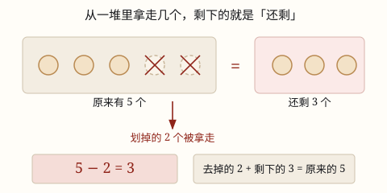
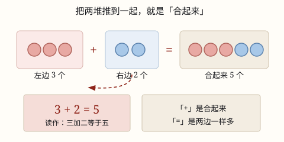

5 以内数的加法与减法
把两堆东西合起来，求一共是多少，用加法。3 个和 2 个合起来是 5 个，写成 3 + 2 = 5。
| 所属主题 | 数的运算 |
|---|---|
| 所属模块 | 数与代数 |
| 课标学段 | 第一学段（1~2年级） |
| 前置知识 | 1~20 的认识 |
| 核心素养 | 数感符号意识运算能力 |
教材定位
人民教育出版社《2024年版》
对应一上第 1 单元「5 以内数的认识和加、减法」：加法的意义与 5 以内加法。；对应一上第 1 单元「5 以内数的认识和加、减法」：减法的意义与 5 以内减法、0 的认识。
课标要求
| 数与代数·数与运算 | 在具体情境中，了解四则运算的意义，感悟运算之间的关系（例3）。 印刷第 18 页 行为动词：了解 |
|---|---|
| 数与代数·数与运算 | 探索加法和减法的算理与算法，会整数加减法。 印刷第 18 页 行为动词：掌握 |
说明
把两堆东西合起来，求一共是多少，就用加法。左边 3 个圆片，右边 2 个圆片，推到一起，一共是 5 个。
写成算式：3 + 2 = 5。中间的「+」叫加号，读作「加」，意思是合起来；「=」叫等号，读作「等于」，意思是两边一样多。
整个算式读出来是：3 加 2 等于 5。等号左边是合起来的动作，等号右边是合出来一共有多少。
合起来的东西越多，得到的数就越大。1 + 2 是 3，3 + 2 是 5。
（减法的认识与 5 以内减法）
从一堆里去掉一部分，求还剩多少，就用减法。盘子里有 5 颗草莓，吃掉 2 颗，盘子里还剩 3 颗。
写成算式：5 - 2 = 3。中间的「-」叫减号，读作「减」，意思是去掉、拿走。
整个算式读出来是：5 减 2 等于 3。减号前面是原来一共的数，减号后面是去掉的数，等号右边是剩下的数。
去掉的越多，剩下的就越少。5 - 1 还剩 4，5 - 4 只剩 1。
使用场景
分糖果：你手上有 2 颗糖，妈妈又给你 3 颗，合起来一共几颗？
文具盒：铅笔盒里原来有 1 支铅笔，爸爸又买回 4 支放进去，现在有几支？
操场：操场上有 2 个小朋友在跳绳，又跑来 3 个，一共有几个小朋友？
吃水果：上午吃了 2 颗草莓，下午吃了 2 颗，一天一共吃了几颗？
买文具：一块橡皮 2 元、一支铅笔 3 元，两样一起买要付多少元？
（减法的认识与 5 以内减法）
分糖果：你有 5 颗糖，分给妹妹 2 颗，自己还剩几颗？
文具盒：铅笔盒里有 4 支铅笔，借给同桌 1 支，还剩几支？
操场：操场上有 5 个小朋友在玩，走了 3 个，还剩几个？
吃水果：盘子里有 3 颗草莓，小明吃掉 1 颗，盘子里还剩几颗？
发作业本：老师手里有 5 本作业本，发出去 2 本，手里还剩几本？
注意点
先看清楚是「合起来」还是「去掉」。看到「又来了」「又放进」「一共」就用加法。
加号别写成减号。加号是横竖两笔交叉成一个「十」，减号只有一横。
等号两边要一样多。左边合出来几个，右边就写几，不能随手写一个数。
从大数往后接着数更快。算 3 + 2，从 3 后面接着数 2 个：4、5，比从 1 数到 5 快。
接着数的时候别把起点再数一遍。从 3 往后数要数「4、5」，不能数成「3、4」。
（减法的认识与 5 以内减法）
先找「原来一共有多少」。减法里减号前面的那个数，一定是原来的总数。
减号是一横，别写成加号。看到「还剩」「剩下」「吃了」「走了」「飞了」就用减法。
去掉几就减几。不要把「剩下的数」当成「去掉的数」填进算式。
用加法检查减法。算完 5 - 2 = 3，就把 3 和 2 合起来看看是不是 5，对上了就说明算对了。
剩下的可以比去掉的多，也可以一样多。全部吃掉就是 3 - 3 = 0，一个也不剩。

图 1：划掉、拿走的那一部分是「去掉」，剩下没划掉的就是「还剩」
为什么是这样

图 1：把两堆推到一起就是「合起来」，加号记这个动作，等号记两边一样多
算理推导
在桌子左边摆 3 个圆片，右边摆 2 个圆片。现在桌上有两堆。
把右边那一堆推到左边，和左边并成一排——这个动作就叫「合起来」。看图 1 里那条虚线箭头。
从 1 开始数这一排：1、2、3、4、5，一共 5 个。所以 3 + 2 = 5。
换个办法再数一次：从 3 往后接着数 2 个——4、5，也停在 5。两种数法都数出 5，说明合起来确实是 5 个。
「+」只是把「推到一起」这个动作写成了符号，「=」是告诉你：合完以后和右边写的 5 一样多。符号没有变出什么新东西，它只是把做过的事记下来。
再试一次：2 + 3 也是把 2 个和 3 个推到一起，还是那一排 5 个。谁在左谁在右，合出来的都一样。
（减法的认识与 5 以内减法）
在桌上摆 5 个圆片，这就是「原来一共有多少」。
要去掉 2 个：把 2 个圆片用手盖住，或者推到桌子另一头——这个动作就是从里面拿走。看图 1 里被打叉的那两个。
数一数还留在原地的圆片：1、2、3，是 3 个。所以 5 - 2 = 3。
把推走的 2 个再推回来：3 和 2 合起来又变成 5。原来减法是加法的「倒回去」——去掉的加上剩下的，正好是原来那一堆。
「-」只是把「盖住、拿走」这个动作写成了一个符号。它没变出新的东西，只是告诉你这一堆少了一块。
再换个数试试：5 - 1，只推走 1 个，剩下 4 个；5 - 4，推走 4 个，只剩 1 个。推走的越多，剩下的就越少。
动手实验
拿 5 颗糖和一张白纸，在纸上画一条竖线分成两格。每次把 5 颗糖随便分到两格（1 和 4、2 和 3、3 和 2、4 和 1），再把两格的糖推到一起数一遍，把算式写下来：1+4=5、2+3=5、3+2=5、4+1=5。你会发现：不管怎么分，推到一起还是 5 颗。 （减法的认识与 5 以内减法） 摆 5 颗糖在桌上，用一个纸杯扣住其中几颗（扣住就表示「去掉」）。掀开纸杯以前，先猜一猜外面还剩几颗，再数一数验证；最后把纸杯里的糖和外面的糖推到一起，看看是不是正好 5 颗。多扣几次、少扣几次，把每次的算式写下来。
按场景的例题
例 1（场景：校园生活） 操场上的小朋友
操场上有 2 个小朋友在跳绳，又跑来 3 个。一共有几个小朋友？
解：合起来用加法：2 + 3。从 2 往后接着数 3 个：3、4、5。
答：5 个小朋友。
例 2（场景：上学日常） 文具盒里的铅笔
文具盒里原来有 1 支铅笔，爸爸又买了 4 支放进去。现在文具盒里有几支铅笔？
解：1 + 4：1 和 4 合起来，从 1 往后数 4 个：2、3、4、5。
答：5 支铅笔。
例 3（场景：饮食与配比） 盘子里的水果
盘子里有 3 颗草莓，妈妈又洗好放了 2 颗进去。盘子一共有几颗草莓？
解：3 + 2：把 3 颗和 2 颗推到一起，数一数是 5 颗。
答：5 颗草莓。
例 4（场景：购物消费） 在文具店买两样东西
你买了一块橡皮 2 元、一支铅笔 3 元，一共要付多少元？
解：求一共，把两样价钱合起来：2 + 3 = 5。
答：一共要付 5 元。
例 5（场景：行程出行） 操场上的小朋友
操场上有 5 个小朋友在玩游戏，走了 3 个。还剩几个小朋友？
解：走了就是去掉，用减法：5 - 3。把 5 个里去掉 3 个，数一数还剩 2 个。
答：还剩 2 个小朋友。
例 6（场景：绿化照明） 盘子里的水果
盘子里有 4 颗草莓，小明吃了 1 颗。盘子里还剩几颗？
解：吃掉就是去掉：4 - 1。检查：剩下的 3 加上吃掉的 1 正好是 4。
答：还剩 3 颗。
例 7（场景：农业生产） 文具盒里的铅笔
文具盒里有 5 支铅笔，借给同桌 2 支。文具盒里还剩几支？
解：借出去就是去掉：5 - 2 = 3。还回来的话，3 再加 2 又是 5。
答：还剩 3 支。
例 8（场景：家庭与年龄） 把糖果分给家人
妈妈买了 3 颗糖，全部分给妹妹。妈妈手里还剩几颗？
解：3 颗都分出去了，就是去掉 3 个：3 - 3 = 0。一个也没剩下，就写 0。
答：还剩 0 颗（一颗也没剩）。
常用推论
加数 + 加数 = 和；和 − 一个加数 = 另一个加数。知道合起来是 5、其中一堆是 2，另一堆就是 5 - 2 = 3。
两堆换个顺序，合起来还是一样多：3 + 2 = 2 + 3 = 5（加法交换律）。
5 以内加法的和不会超过 5：1+4、2+3、3+2、4+1 合出来都是 5。
从大数往后接着数几个，就是加几：4 + 1 是 4 往后数 1 个，得 5。
被减数 − 减数 = 差；差 + 减数 = 被减数。剩下的加上去掉的，正好是原来一共的。
被减数 − 差 = 减数。知道原来有几个、最后剩几个，就能算出被拿走了几个。
去掉的越多，剩下的越少：5 - 1 = 4、5 - 2 = 3、5 - 3 = 2、5 - 4 = 1。
减法是加法的倒回去：如果 2 + 3 = 5，那么 5 - 2 = 3、5 - 3 = 2。
易错点
错看到「又跑来 3 个」，写成 2 - 3。
为什么错把「合起来」和「去掉」搞反了。「又跑来」「又放进」说明东西变多，要合起来用加法；只有「走了」「吃掉」才是去掉。
正确合起来用加法：2 + 3 = 5。
错看图列式时，图上是 2 个红气球和 2 个蓝气球，写成 2 - 2 = 0。
为什么错把加号看成减号了。图上两堆都好好画着，没有划掉、没有飞走，就是要合起来。
正确两堆都在，用加法：2 + 2 = 4。
错算 3 + 2 时从 3 往后数 2 个，数成 3、4，答 4。
为什么错把起点 3 又数了一遍。往后数 2 个要数两下，而且要从 3 的后面开始。
正确从 3 后面接着数：4、5，所以 3 + 2 = 5。
错算式写成 3 + 2 = 6，等号右边随手写一个数。
为什么错没有真的合起来数一遍就写答案，等号两边不一样多。
正确先摆圆片合起来数清楚，再把数填到等号右边：3 + 2 = 5。
错看到「还剩」却用加法，写成 5 + 2 = 7。
为什么错把「合起来」和「去掉」搞反了。「走了」「吃了」「借出去」都说明东西变少了，要从总数里去掉。
正确去掉用减法：5 - 2 = 3。
错把去掉的数写在前面：2 - 5。
为什么错减法要从原来的总数里往外拿。5 才是原来那一堆，2 是拿走的那一小块，小的一块不能当被减数。
正确先写原来的总数：5 - 2 = 3。
错看图列式时，图上划掉了 2 个，却写成 5 + 2。
为什么错没看懂图上的记号。图上画斜叉、画虚线、画往外指的箭头，都表示这一块被去掉了。
正确有划掉、有箭头往外，就用减法：5 - 2 = 3。
错算 5 - 2 时把「剩下的 3」当成答案填进了减号后面，写成 5 - 3 = 2 还说不清哪个是答案。
为什么错没分清「去掉的」和「剩下的」。减号后面是拿走的 2，等号右边才是剩下的 3。
正确一句一句读题：原来 5 个，拿走 2 个，5 - 2，剩下 3 个。
直观理解
把加法想成把两个盘子里的糖倒进同一个大碗：左手盘里 3 颗，右手盘里 2 颗，哗啦一下倒进碗里，就是 5 颗。加号「+」就是「倒在一起」这个动作，等号「=」是在说：碗里的糖和写下来的那个数一样多。你也可以用手指帮忙——先竖 3 根，再竖 2 根，数一数一共竖了几根。 （减法的认识与 5 以内减法） 把减法想成从口袋里往外掏糖：口袋里原来有 5 颗，掏走 2 颗放在桌上，再摸一摸口袋，里面还剩 3 颗。减号「−」就是那只往外掏的手。你随时可以把桌上的 2 颗放回口袋——放回去又变成 5 颗，这就是减法和加法是一对的原因。手指也能帮忙：先竖 5 根，弯下 2 根，还立着的就是 3 根。
合起来，用加号；两堆并成一堆瞧。等号两边一样多，从左数到右，答案跑不掉。 （减法的认识与 5 以内减法） 原来有，去掉几，剩下的用减号记。减完别忘验一验：剩下的加去掉的，正好等于原来的。